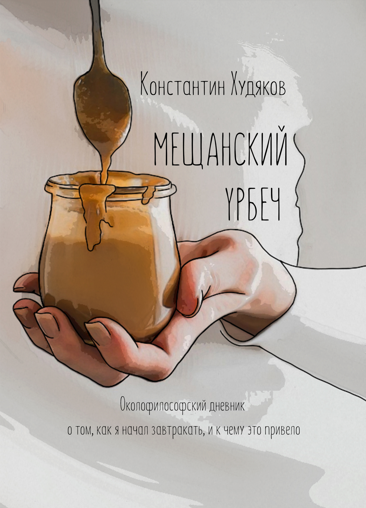

Короткая книга для длинных внутренних разговоров
Мещанский урбеч
Околофилософский дневник о том, как я начал завтракать, и к чему это привело.
Девять завтраков, девять поводов задуматься и ни одной попытки объяснить вам жизнь за N простых шагов.

Не мотивационная книга. Скорее завтрак с неудобными вопросами.
«Мещанский урбеч» - небольшая ироничная книга о смысле жизни, информационном шуме, готовых ответах и праве человека думать самостоятельно. Ее можно прочитать быстро, но лучше не спешить: главы устроены как отдельные визиты в кафе.

«Эта книга для тех, кто хочет научиться мыслить самостоятельно и для тех, кто уже умеет».
Она не спорит с читателем громко. Она просто садится напротив, заказывает завтрак и задает вопрос, от которого уже не так удобно отмахнуться.
Где купить
Книга живет сразу в нескольких форматах: ее можно читать с экрана, слушать, заказать на полку или найти там, где вы обычно покупаете книги.
Электронная, печатная и аудиоверсия.
Маркетплейс OzonПроверить наличие и доставку через привычную корзину.
Маркетплейс WildberriesФизическая книга, если карточка доступна в вашем регионе.
Электронная библиотека ЛитресПоиск электронной версии в большой книжной экосистеме.
Подписка Яндекс КнигиПроверить, доступна ли книга в чтении по подписке.
Книжная сеть Читай-городЗаказать через книжный магазин, а не через маркетплейс.
Книжный магазин Book24Карточка книги в большом книжном магазине.
Книжная сеть БуквоедПетербургский книжный маршрут для книги, которая любит полки.
Отзывы LiveLibПосмотреть читательские оценки и добавить книгу в список.

Не только в России
У нашего дагестанского урбеча уже есть бразильская жизнь.
«Мещанский урбеч» вышел на португальском языке в Бразилии как Urbetch burguês. Да, слово «урбеч» пережило перевод, океан и встречу с бразильским завтраком.
Заглянуть в Бразилию на кофеДля жарких споров, уютных книжных полок и кофейных столиков
У книги есть важное офлайн-качество: ее хочется взять в руки из-за названия, обложки и формата. Она небольшая, не выглядит тяжеловесно и работает как повод для размышлений и вопросов - особенно в кафе, на рабочем столе или в метро.
Если в вашей повседневной жизни есть место для книги - вы ведете или посещаете книжный клуб, работаете или владеете кофейней или книжным магазином, ведете подкаст или книжный блог - можно запросить пробные экземпляры, взять книги на реализацию или договориться о маленьком разговоре вокруг книги.